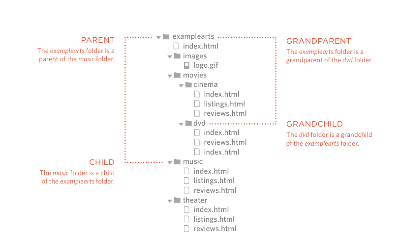

H2O
10thDecember
x2
Hello World
Prof
A brief history of time hello world
- Element 1
- Element 2
- Element 3
- Element 4
- Element 1
- Element 2
- Element 3
- Element 4
- Sashimi
- Sliced raw fish that is served with
condiments such as shredded daikon radish or
ginger root, wasabi and soy sauce
- Scale
- A device used to accurately measure the
weight of ingredients
- Scamorze
- A technique by which the scales are removed
from the skin of a fish
- Scamorzo
- An Italian cheese usually made from whole
cow's milk (although it was traditionally made
from buffalo milk)
- Element 1
- Sub Element 1
- Sub Element 2
- Sub Element 3
- Sub Element 4
- Element 2
.
- Element 3
- Element 4
Absolute URL
Relative URL
Hierarchy

Opens id in outlook or chrome need email integration
Opens number in mobile numpad only works on mobile phone
Opens id in skype need skype integration
Internet Movie Database
Film-Making Terms
Arc Shot
Interlude
Prologue
Arc Shot
A shot in which the subject is photographed by an
encircling or moving camera
Interlude
A brief, intervening film scene or sequence, not
specifically tied to the plot, that appears
within a film
Prologue
A speech, preface, introduction, or brief scene
preceding the the main action or plot of a film;
contrast to epilogue
Top